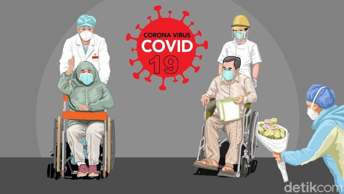

Tambah 10, Pasien Sembuh dari Corona di Timika Jadi 127 Orang

Sumber :https://www.detik.com/
Juru bicara tim gugus tugas penanggulangan COVID-19 Timika Reynold Ubra memperbarui data kasus Corona di wilayahnya. Per 8 Juni, kasus positif bertambah jadi 301 kasus dan pasien sembuh menjadi 127 orang.
"Data yang diterima per 8 Juni 2020, ada penambahan 10 kasus positif COVID-19 dan penambahan 10 kasus sembuh, total pasien positif COVID-19 ada 301 kasus, sembuh 127 orang, meninggal 5 orang, jadi kasus aktif sebanyak 169," kata Reynold, Senin (8/6/2020)
Dengan adanya penambahan kasus sembuh, Reynold yakin dalam beberapa hari ke depan terus ada tambahan pasien pulih dari COVID-19. Selain pasien Corona, Reynold juga mengatakan ada puluhan PDP terkait Corona dinyatakan sudah sehat dan selesai masa isolasi.
"Untuk saat ini jumlah PDP tersisa 9 orang," tambah Reynold.
Reynold memaparkan, jumlah spesimen secara kumulatif di Timika telah mencapai 1.773 dan per 8 Juni 2020. Ada penambahan 20 spesimen yang dirujuk ke Jayapura. Dari 1.773 spesimen yang telah dilakukan pemeriksaan laboratorium. 301 spesimen dinyatakan terkonfirmasi positif. Sementara 1.237 dilaporkan negatif. Reynold menyebut masih ada 235 spesimen yang masih menunggu hasil.
Berdasarkan hasil laboratorium, kasus terkonfirmasi positif COVID-19 total 301 dengan rincian 108 isolasi rumah sakit, 61 isolasi shelter, 127 sembuh, 5 meninggal. Lalu PDP 9 orang, 7 di antaranya isolasi rumah sakit, 2 isolasi mandiri. Kemudian ODP 727, yang mana 709 isolasi mandiri, 525 selesai dipantau.
kembali


 Copyright@2020
Copyright@2020